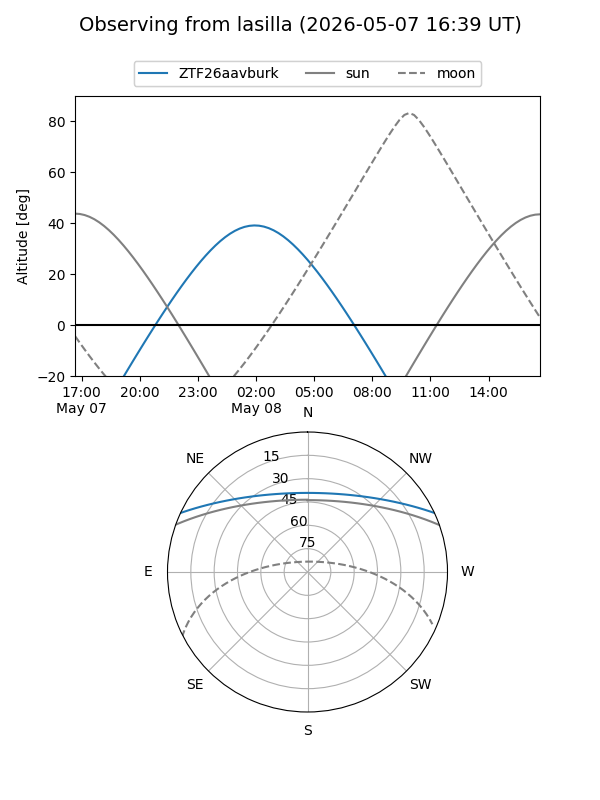
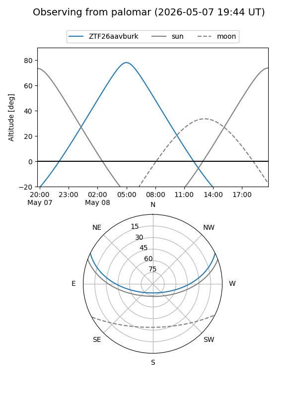

ZTF26aavburk
Target ZTF26aavburk at 2026-05-08 07:31
Aliases and brokers:
FINK: link
Lasair: link
ALeRCE: link
alt names
ZTF26aavburk (ztf,fink_ztf)
Coordinates:
equatorial (ra, dec) = 183.8349,+21.73755
equatorial (HMS+DMS) = 12:15:20.37,+21:44:15.17
galactic (l, b) = (244.2646,+80.17835)
Flags:
Photometry:
last ztfg=20.12
1 ztfg detections
Lightcurve
Visibility


Additional plots